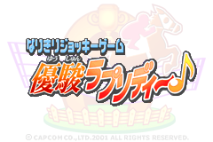
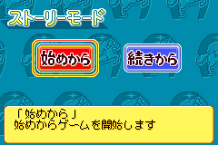

Narikiri Jockey Game - Yuushun Rhapsody (Japan)
Stateless / Passcode 💾 MultiBoot
Cartridge Identity
- Game Code
AYRJ(FamilyAYR)- Header Title
Y-RHAPSODY- Maker / Revision
08/ rev0- ROM Size
- 8.0 MiB (8,388,608 B)
- Save Media
None / Unknown- SHA-256
6ad523c19e64e2ae105a7c9eecb81fdae127e3ce2cece6afd2d5a92b531fcfe2
Screenshots


Link Cable & Multiplayer Communications
This title contains detected communication capabilities: 💾 MultiBoot.
Detailed protocol specifications, SIO registers, Joybus commands, and MultiBoot sequences are documented in the Link & Multiplayer Reference.
- Single-Cart MultiBoot
- Single-Cartridge MultiBoot (Download Play) client/server handler · Thumb SWI 0x25 (
0xDF25):0x0c58fc,0x0c6726,0x1007ce,0x6ec2d2
Cartridge Storage Architecture: Stateless / Passcode
Zero non-volatile battery hardware: This cartridge PCB contains ROM only (no SRAM, Flash, or EEPROM chips). Progression is preserved via on-screen passcodes or session-only gameplay. No
.sav file is generated or required.
Asset Map (formatkit.asset-map.v1)
Download AYRJ-r0-6ad523c19e64e2ae.asset-map.json.gz (265,101 B (258.9 KiB)) Verified PASS · 24.97% coverage
| Metric | Bytes / Value | Entries |
|---|---|---|
| Identified | 1,871,760 B (1.79 MiB) (22.31%) | 3,226 |
| Mapped | 0 B (0.00%) | 0 |
| Opaque | 222,820 B (217.6 KiB) (2.66%) | 1 |
| Unknown | 6,294,028 B (6.00 MiB) (75.03%) | 2,550 |
| Total ROM Size | 8,388,608 B (8.00 MiB) | 5,777 |
| Coverage % | 24.97% | — |
| Entries w/ Code Refs | 3,250 / 5,777 (56.26%) | — |
Top Identified Formats: compress.bios-rle (2,316 · 1,150,092 B (1.10 MiB)) · compress.bios-huffman (39 · 385,220 B (376.2 KiB)) · compress.bios-lz77 (231 · 269,758 B (263.4 KiB)) · gfx.gba-palette (636 · 64,512 B (63.0 KiB)) · studio.is-asc03 (2 · 1,170 B (1.1 KiB)) · audio.m4a-song-table (1 · 816 B) · gba.rom-header (1 · 192 B)
Largest unknown Extents (Headerless / Custom Asset Candidates)
| Offset | Size | Shannon Entropy | Code Refs |
|---|---|---|---|
0x002A0610 | 1,256,472 B (1.20 MiB) | 1.521 bits/B | 0 |
0x006131EC | 1,015,428 B (991.6 KiB) | 6.155 bits/B | 0 |
0x007132B9 | 747,235 B (729.7 KiB) | 7.094 bits/B | 0 |
0x000D0EC4 | 388,656 B (379.5 KiB) | 7.177 bits/B | 0 |
0x00468074 | 161,236 B (157.5 KiB) | 6.323 bits/B | 0 |
gzip -dk AYRJ-r0-6ad523c19e64e2ae.asset-map.json.gz && gbakit map verify rom.gba AYRJ-r0-6ad523c19e64e2ae.asset-map.json
gbakit assets export rom.gba --asset-map AYRJ-r0-6ad523c19e64e2ae.asset-map.json -o out/Text, Fonts & Scene Data
- Primary Text Encoding
- Plain ASCII (uncompressed) (
85ASCII strings ·2LZ77 ASCII blocks) - Font & VWF Indicators
- VWF Width Table 1bpp Font · BIOS SWIs: BitUnPack
0x10:3· LZ770x11/12:11· Huffman0x13:5· RLE0x14/15:14 - Scene & Packaging
53ROM pointer tables (≥32 entries,14≥200) ·3relativeu32TOCs ·226OAM metasprite hits
Hardware MMIO Subsystems
ppu_display0x8000f78,0x8000fe4,0x8016dec,0x8038be0save_bus_sram_flash0x8001e10